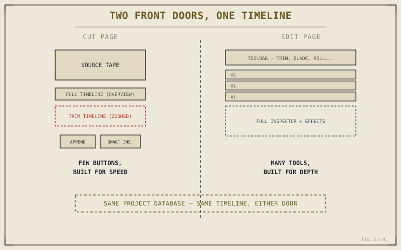

Newer editors sometimes skip the Cut page entirely, treating it as a beginner's training-wheels version of the Edit page and heading straight for the "real" tool. That's a mistake worth correcting before it hardens into a habit. The Cut page isn't a simplified Edit page — it's a different tool, purpose-built for a specific kind of pressure that the Edit page, for all its depth, isn't optimized to handle: getting a large volume of footage into a coherent rough sequence, fast.
The Problem the Cut Page Solves
Picture a same-day turnaround edit — a live event, a conference, a segment that has to be assembled and delivered within hours of the shoot wrapping. Or picture an unscripted or documentary project with dozens of hours of footage and a need to get a rough structure down before there's time to think carefully about every trim. In both cases, the bottleneck isn't precision. It's speed: finding the right footage fast, and getting it roughly into place fast, with fine-tuning deferred until there's time for it.
The Edit page, covered starting in Part IV, is built for depth — multiple tracks, a full toolbar, fine control over every kind of trim and transition. That depth is exactly what makes it slower to move through when what you actually need is speed. The Cut page strips away most of that depth deliberately, keeping only the tools that matter for rapid assembly, and organizing the screen specifically around the two things that eat the most time under pressure: finding footage, and placing it.

Different screens, different goals — speed versus depth — sharing the exact same timeline underneath.
Two Timelines, Not One
The Cut page's most distinctive feature is that it shows you two versions of your timeline at once, stacked on top of each other. The upper timeline is a full, zoomed-out overview of your entire sequence — useful for seeing structure and navigating quickly across a long assembly. The lower timeline, sometimes called the trim timeline, is a tightly zoomed view centered on whatever edit point you're currently near, built specifically for making fast, precise adjustments right at a cut without needing to zoom the whole timeline in and out constantly. Chapter 3.4 covers this second timeline's trimming behavior in detail; for now, the point is architectural: this dual-timeline layout doesn't exist on the Edit page, because it's solving a problem — navigating a long sequence and making precise local adjustments at the same time — that's specific to fast-paced assembly work.
The Cut page isn't the Edit page with fewer buttons. It's a different answer to a different question: not "how do I build this with full control," but "how do I get this roughly right, fast, and worry about precision later."
A Deliberately Small Toolset
Where the Edit page's toolbar, covered in Chapter 4.3, offers a wide range of tools for different editing situations, the Cut page offers a handful of large, clearly labeled actions — Append, Smart Insert, Source Overwrite, Ripple Overwrite, Place on Top, and a few others — each doing one clear, predictable thing to get a clip onto the timeline quickly, without requiring you to first select a specific tool mode the way many Edit page operations do. This isn't a limitation to work around. It's the entire design philosophy: fewer decisions per action means faster throughput when you're moving through a large volume of footage.
Same Project, Same Timeline, Different Front Door
It's worth repeating something Chapter 1.2 already established, because it matters specifically here: switching to the Cut page doesn't create a separate, simplified copy of your timeline. It's the exact same timeline data, in the exact same project, viewed through a different, speed-optimized interface. A sequence built entirely on the Cut page opens on the Edit page exactly as you'd expect, ready for the deeper refinement Part IV covers, and vice versa — trims made on Edit are reflected back on Cut instantly. Neither page "owns" the timeline more than the other.
This is the detail that makes the Cut page genuinely useful rather than a novelty: you're never locked into finishing a sequence on whichever page you started it on. A common, sensible workflow — one Chapter 3.5 makes explicit at the end of this part — is starting fast on Cut to get a rough structure down, then switching to Edit once the sequence needs the precision and depth Cut deliberately doesn't offer. The next few chapters walk through Cut's specific tools for finding and placing footage quickly, starting with Source Tape in Chapter 3.2 — the tool built specifically for scrubbing through large amounts of footage without opening one clip at a time.
Key Concepts to Remember
- The Cut page is built for speed and volume, not as a simplified version of the Edit page — different purpose, not less capability.
- Its dual-timeline layout — a full overview plus a zoomed trim view — solves navigation and precision at the same time, a problem specific to fast assembly.
- A small set of clearly labeled placement actions replaces the Edit page's broader toolset, trading flexibility for throughput.
- Cut and Edit share the exact same timeline data — a sequence built on one continues seamlessly on the other, with nothing to convert or reconcile.
Cross-References Forward
| → Ch. 3.2 | Covers Source Tape, the Cut page's tool for scrubbing through a bin's footage as one continuous strip. |
| → Ch. 3.5 | Gives a practical decision framework for when to work on Cut versus Edit, closing out this part. |
| → Pt. IV | The Edit Page: Timeline Fundamentals — the deeper toolset the Cut page deliberately trades away for speed. (Not yet published.) |